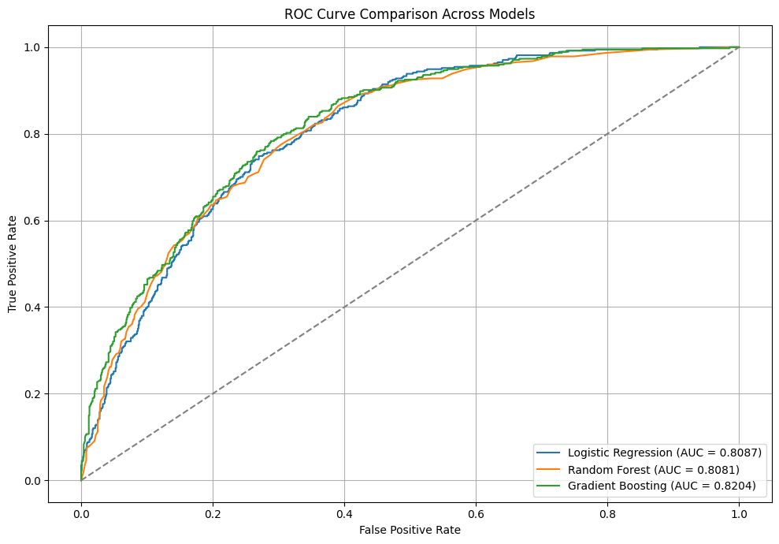
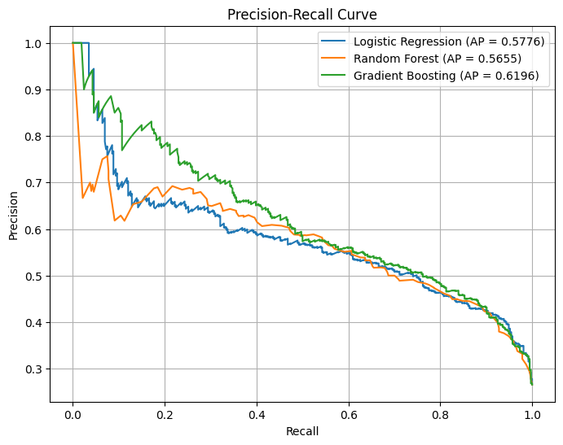
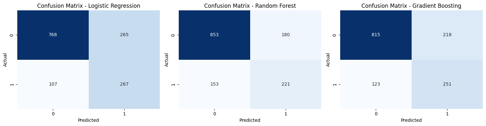
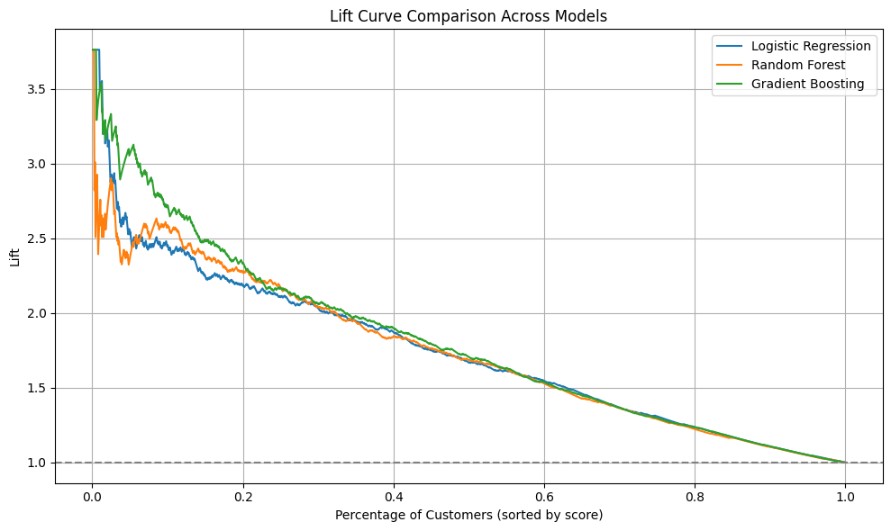
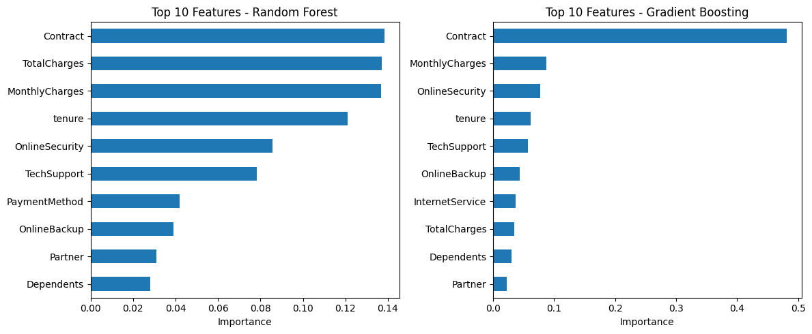
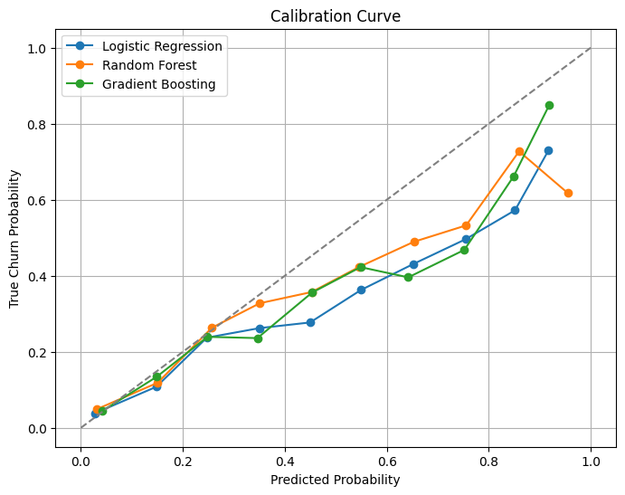

5) Evaluation (CRISP-DM methodology)
Methodology Overview
In the Evaluation phase of CRISP-DM, we assessed and compared the performance of three machine learning models: - Logistic Regression - Random Forest - Gradient Boosting
This step involved a detailed analysis of various metrics and visual tools to determine the model best suited to predict customer churn. The methodology applied includes:
✅ 5.1. Model Performance Metrics
- Accuracy: Overall correctness of predictions.
- Precision: Correct positive predictions over all predicted positives.
- Recall: Correct positive predictions over all actual positives.
- F1-Score: Harmonic mean of precision and recall.
- ROC AUC: Measures model’s ability to distinguish between classes.
📈 5.2. ROC Curve
- Visualizes the trade-off between the True Positive Rate and False Positive Rate at various thresholds.
🔁 5.3. Precision-Recall Curve
- Useful for imbalanced datasets.
- Shows the trade-off between precision and recall.
🧮 5.4. Confusion Matrix
- Matrix that shows true positives, true negatives, false positives, and false negatives for each model.
📊 5.5. Lift Curve
- Evaluates the effectiveness of the model in identifying high-risk customers compared to random selection.
💡 5.6. Feature Importance
- Identifies which features contribute the most to the model’s predictions (for tree-based models).
📏 5.7. Calibration Curve
- Assesses how well the predicted probabilities align with the actual outcomes.
These evaluation methods ensure a comprehensive and reliable comparison of the models’ performance before deployment.
5.1) ROC Curve Analysis for Churn Prediction Models

The ROC (Receiver Operating Characteristic) Curve illustrates the trade-off between the True Positive Rate (Recall) and the False Positive Rate for different classification thresholds. The Area Under the Curve (AUC) provides a single metric that summarizes model performance across all thresholds.
Key Insights:
- Gradient Boosting achieved the highest AUC (0.8204), indicating the best ability to discriminate between churners and non-churners among the evaluated models.
- Logistic Regression and Random Forest yielded nearly identical AUCs (0.8087 and 0.8081, respectively), performing only slightly below Gradient Boosting.
- All models significantly outperform the random guess baseline (diagonal line), showing that they are effective at classifying churn vs. no churn.
- The ROC curves are relatively close to each other, suggesting that although Gradient Boosting has a small edge, the performance difference among models is not dramatic.
5.2) Model Performance Comparison – Churn Prediction
This table summarizes the key performance metrics for three machine learning models: Logistic Regression, Random Forest, and Gradient Boosting. The evaluated metrics include ROC AUC, Accuracy, Precision, Recall, and F1-Score.
Key Insights:
| Metric | Logistic Regression | Random Forest | Gradient Boosting |
|---|---|---|---|
| ROC AUC | 0.8087 | 0.8081 | 0.8204 |
| Accuracy | 0.7356 | 0.7633 | 0.7576 |
| Precision (Churn) | 0.5019 | 0.5511 | 0.5352 |
| Recall (Churn) | 0.7139 | 0.5909 | 0.6711 |
| F1-Score (Churn) | 0.5894 | 0.5703 | 0.5955 |
Interpretation:
- Gradient Boosting demonstrates the best overall balance, with the highest ROC AUC (0.8204) and F1-Score (0.5955), making it a strong candidate for churn prediction where both precision and recall matter.
- Random Forest yields the best accuracy (0.7633) and precision (0.5511), suggesting it is more conservative in predicting churn and may produce fewer false positives.
- Logistic Regression achieves the highest recall (0.7139), meaning it is more sensitive to detecting actual churners, but at the cost of lower precision.
5.3) Precision-Recall Curve Insights

Gradient Boosting Performs Best on Precision-Recall Trade-off
- Gradient Boosting (green curve) achieved the highest average precision (AP = 0.6196).
- This suggests it is the most effective model in distinguishing churners from non-churners.
- Particularly useful in imbalanced datasets, where precision-recall is more meaningful than accuracy or ROC AUC.
Logistic Regression and Random Forest Perform Similarly
- Logistic Regression (AP = 0.5776) and Random Forest (AP = 0.5655) have similar curves.
- Despite Random Forest showing a slightly better ROC AUC previously, Logistic Regression performs slightly better in terms of precision-recall, indicating it generates fewer false positives at critical thresholds.
Usefulness in Imbalanced Classification
- Since churn prediction is an imbalanced classification task, the Precision-Recall Curve is a more reliable evaluation metric than overall accuracy or ROC AUC.
- The higher the area under the precision-recall curve (AP), the more effective the model is at identifying churners.
5.4) Confusion Matrix Insights

Below is the summary of confusion matrices for the three models:
| Model | True Negatives (TN) | False Positives (FP) | False Negatives (FN) | True Positives (TP) |
|---|---|---|---|---|
| Logistic Regression | 768 | 265 | 107 | 267 |
| Random Forest | 853 | 180 | 153 | 221 |
| Gradient Boosting | 815 | 218 | 123 | 251 |
Key Insights:
Logistic Regression
- Strong performance in identifying churned customers (
TP = 267) with the lowest FN (107). - Highest FP (265) → more false alarms, predicting churn for non-churners.
Random Forest
- Best at identifying non-churned customers (
TN = 853) with the lowest FP (180). - Misses more churned customers (
FN = 153) → lower recall.
Gradient Boosting
- Offers a balanced prediction with decent TP (251) and moderate FP/FN values.
- Reflects its stable performance across F1-score, AUC, and Precision-Recall curves.
5.5) Lift Curve Insights

The Lift Curve shows how much better a model is at identifying churners compared to random selection.
Key Insights:
Gradient Boosting:
- Shows the highest Lift in the top customer segments (top 5% to 15%).
- This indicates it is the most effective at identifying customers with high churn probability early on — ideal for targeted marketing actions.
- Its Lift reaches close to 3.7, meaning it's almost 3.7 times more effective than random selection in the top sample segment.
Random Forest:
- Competitive performance, with an initial Lift around 3.0.
- Decreases more gradually, maintaining solid performance up to 30–40% of customers.
Logistic Regression:
- Shows the lowest Lift among the three, with less separation between churners and non-churners.
- Despite being simpler, it still provides predictive value (initial Lift ~2.5), but the advantage quickly fades.
5.6) Feature Importance Analysis (Random Forest & Gradient Boosting)

The bar charts show the Top 10 most important features used by each model to predict customer churn. This helps us understand which features most influence the models' decision-making process.
Random Forest Insights:
- Contract is the top feature, followed closely by TotalCharges and MonthlyCharges.
- Features related to the customer’s financial interaction and service plan dominate importance.
- Tenure (duration of relationship) is also critical, reflecting its strong association with loyalty.
- Additional important features include OnlineSecurity, TechSupport, and PaymentMethod — all tied to perceived service value.
Gradient Boosting Insights:
- Contract is by far the most important feature, with much higher weight than all others.
- This suggests that the type of contract (e.g., month-to-month vs. one/two-year) has significant predictive power in identifying churn risk.
- Other features such as MonthlyCharges, OnlineSecurity, and Tenure still contribute but with much lower relative importance.
- Overall, GBM appears more focused, attributing stronger influence to fewer features.
5.7) Calibration Curve Analysis

The calibration curve evaluates how well a model’s predicted probabilities align with actual outcomes — in this case, churn probabilities.
Interpretation:
- The dashed diagonal line represents perfect calibration — where predicted probability matches the observed probability.
- Curves closer to the diagonal indicate better-calibrated models.
- Points above the diagonal mean the model underestimates the probability (actual churn is higher).
- Points below the diagonal mean the model overestimates the probability.
Key Insights:
- Logistic Regression shows reasonably good calibration across most of the probability bins, aligning fairly well with the ideal diagonal. It tends to slightly underestimate churn at higher probabilities.
- Gradient Boosting demonstrates a strong calibration up to ~0.7, and then significantly overestimates the probability near the end. However, it's better than Random Forest in the 0.9+ range.
- Random Forest generally overestimates churn probabilities, especially in higher ranges, which may lead to a higher false positive rate in high-risk groups.
5.8) Summary of Evaluation Results – Churn Prediction Project
During the evaluation phase of the CRISP-DM methodology, multiple machine learning models (Logistic Regression, Random Forest, and Gradient Boosting) were compared using a variety of metrics and visualizations. Below are the key summarized results:
Key Summarized Insights:
ROC Curve (AUC):
- All models outperformed the random baseline, with Gradient Boosting achieving the highest AUC (0.8204), indicating the best capability to distinguish between churners and non-churners.
Precision-Recall Curve (AP):
- Gradient Boosting also achieved the highest average precision (AP = 0.6196), which is crucial in imbalanced datasets.
Confusion Matrix:
- Logistic Regression identified the highest number of churners correctly (TP = 267).
- Random Forest had the lowest number of false positives (FP = 180).
- Gradient Boosting showed balanced performance between true positives and false positives.
Lift Curve:
- Gradient Boosting demonstrated the highest lift (~3.7) in the top customer segments, making it the most effective for targeted marketing actions.
Feature Importance:
- The Contract variable was consistently the most influential across tree-based models, followed by MonthlyCharges, TotalCharges, and Tenure.
Calibration Curve:
- Logistic Regression showed overall good calibration. Gradient Boosting slightly overestimated churn at high probabilities but was better calibrated than Random Forest.
Cross-Validation:
- Random Forest achieved the highest average ROC AUC with the lowest variance (0.9266 ± 0.0488), indicating more stable performance.